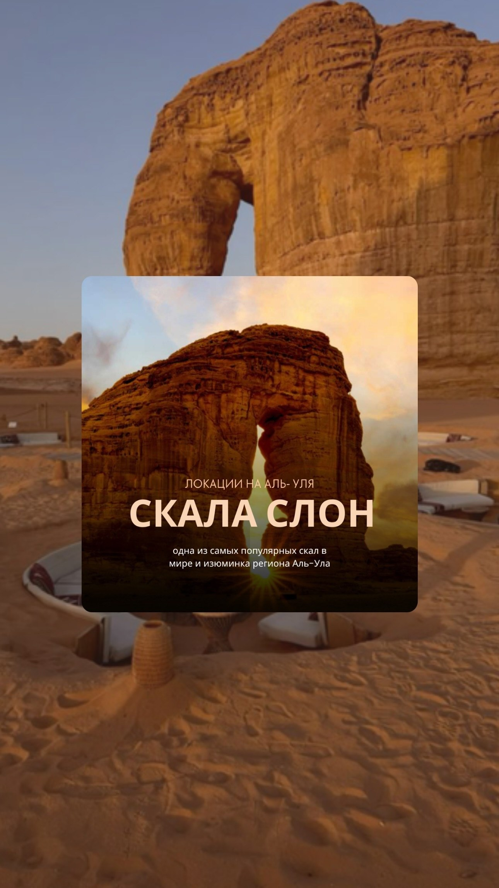
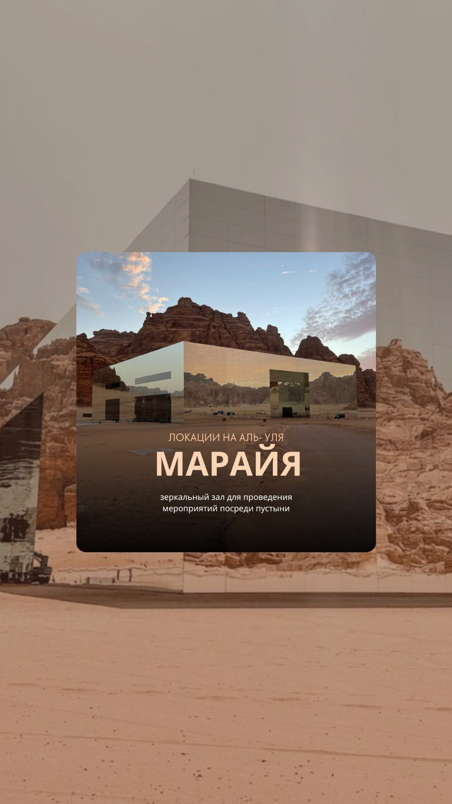
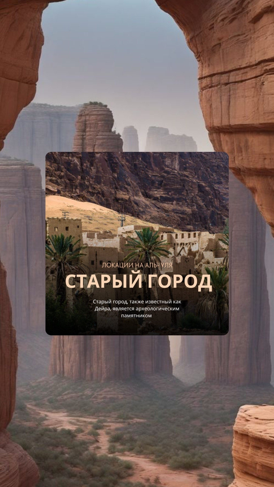

О месте
Аль-Уля — одно из самых захватывающих мест на Земле. Здесь находятся набатейские гробницы Хегры (Мадаин Салих) — объект наследия ЮНЕСКО, сравнимый с Петрой в Иордании.
Скала Слон, зеркальное здание Марайя посреди пустыни, старый город с тысячелетней историей — всё это ждёт вас в Аль-Уле.
Локации Аль-Улы



Что посетить
Природное чудо — огромная скала в форме слона посреди пустыни. Одно из самых фотографируемых мест Саудовской Аравии.
Набатейские гробницы I века н.э. — первый объект ЮНЕСКО в Саудовской Аравии. Монументальные фасады высечены прямо в скалах.
Зеркальное здание-концертный зал посреди пустыни. Занесено в Книгу рекордов Гиннесса как самое большое зеркальное здание в мире.
Заброшенный древний город с глинобитными домами и узкими улочками. Более 900 домов и 400 магазинов — живая история Аравии.
Один из самых длинных зиплайнов в мире — 1,7 км над ущельем. Незабываемые ощущения над древними скалами Аль-Улы.
Полёт на воздушном шаре над пустынными пейзажами Аль-Улы на рассвете — один из самых романтичных опытов в мире.
Готовы к поездке?
Выберите даты, отель и активности — мы возьмём на себя всё остальное.
Собрать тур в Аль-Улю →